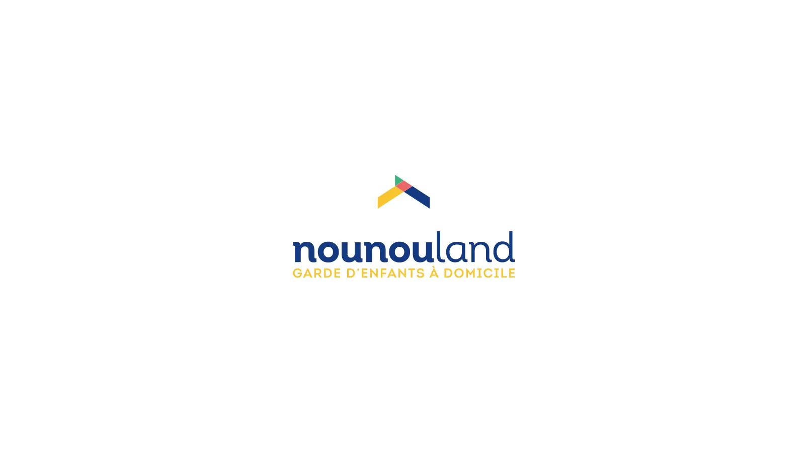
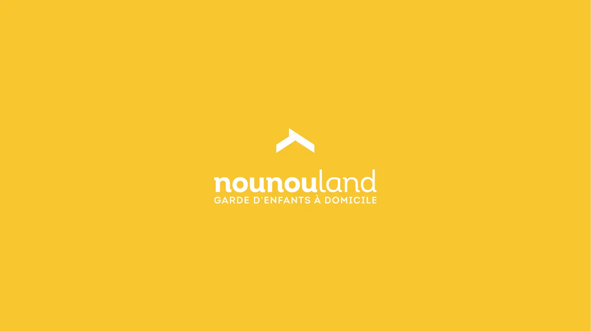
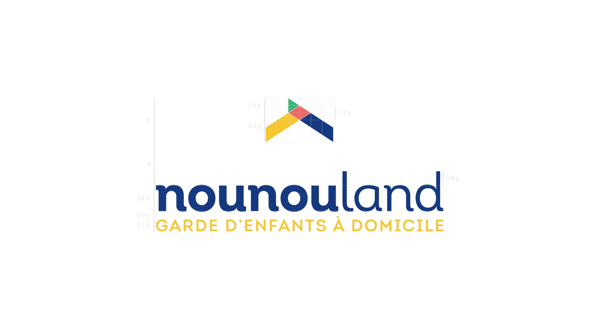
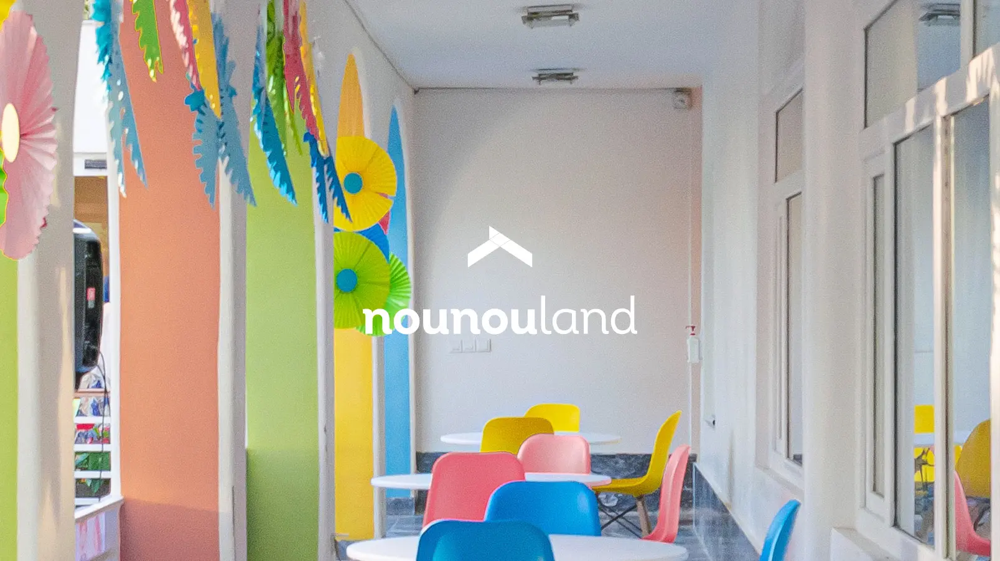
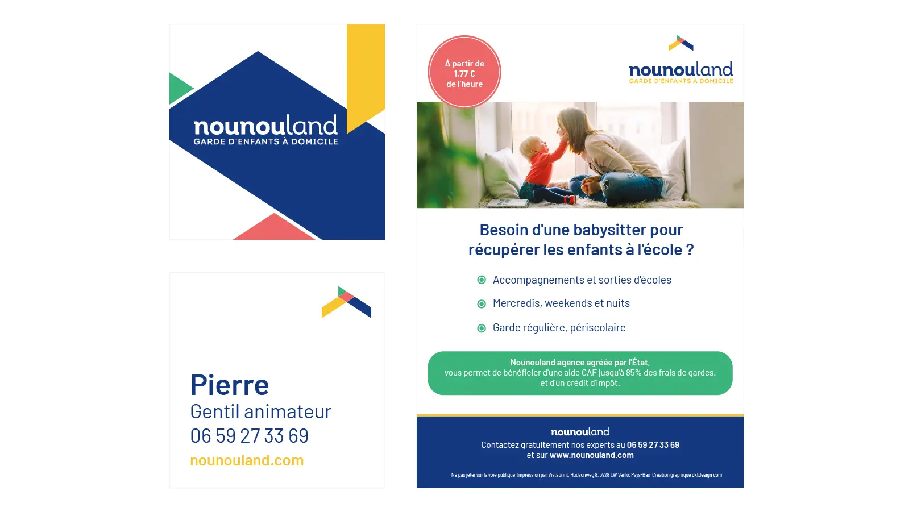

Nounouland
Accompagnement du début à la fin sur la création de l'identité visuelle de Nounouland : le logo, quelques documents de communication comme une carte de visite, un flyer de service à la personne, ainsi qu'un webdesign ordinateur et mobile pour le site Nounouland.
Logo
Le logo et l'univers de la marque se devaient d'être à la fois ludiques, rigoureux et rassurants. Pour cela, il a notamment fallu travailler les formes géométriques et les couleurs. Vient s'y ajouter la représentation du toit de maison, symbole de sécurité.




Documents de communication
Carte de visite & flyer A5.

Parlons de votre projet